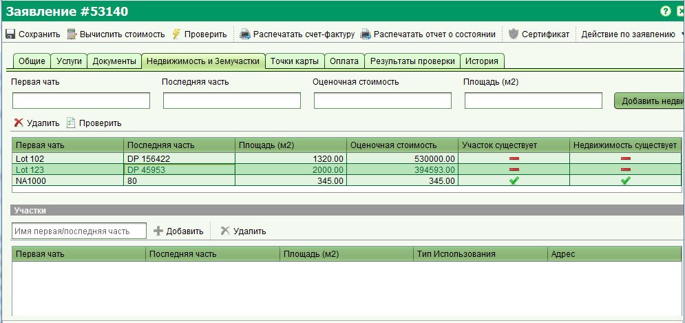

Для проверки существования недвижимости, перейдите на вкладку "Недвижимость и Земучастки" формы заявления, выберите ее из списка и нажмите кнопку "Проверить".

Если две части идентификатора недвижимости совпадают с существующей записью в базе данных, недвижимость будет отмечена как существующая. Также будет проверено наличие пространственных данных земельных участков у данной недвижимости и в случае их наличия будет отмечена галочка "Участок существует".
В случае если информация отсутствует в базе данных или объект недвижимости является новым, в обоих полях будет стоять минус. При этом несмотря на то, что недвижимость была добавлена в заявление она не записывается в основную таблицу BA Unit (содержащую записи о недвижимости). Для того, чтобы зарегистрировать несуществующую недвижимость, потребуется добавить соответствующую услугу в заявление, завершить ее и одобрить заявление.
Смотрите также: